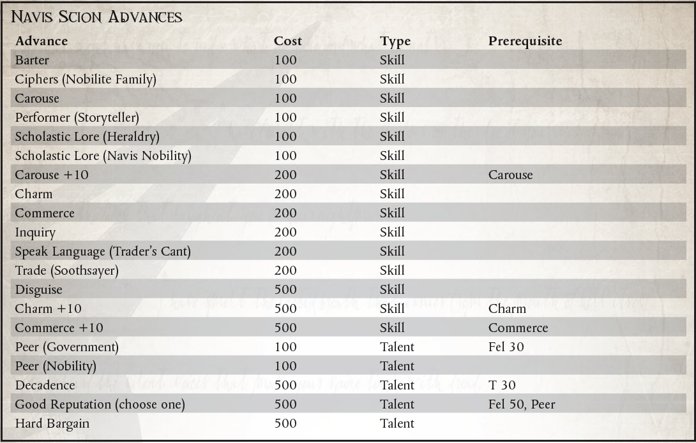

“很高兴认识您，先生。请允许我介绍一下自己。我是你的车夫，你的星辰守门人。这些贸易会议很无聊，你不觉得吗？我们有整整一周的时间来讨论广域的贸易路线。你愿意和我一起喝一杯amasec吗？精彩的！为我们的努力干杯。”
——导航员 Gadevilious Obrex，Vor'cle 家族的使者
航海者是少数幸运的出生在特权阶层的人，他们政治上富裕的氏族是阴谋的源泉，就像他们变异的身体一样严峻和曲折。虽然一些航海家授权代理人充当他们与帝国社会之间的中介，但其他人则在内部，从他们数量众多的狡猾的航海家中挑选出能够最大程度地发挥众议院政治影响力的人。虽然航海贵族是帝国的一部分，但每个航海家都拥有很大的自治权，他们的影响力和权力与帝国的伟大修女不相上下。因此，很自然地，许多家族都有外交官和代表来与更大的帝国打交道。这些海军贵族的后裔是伟大家族的面孔，被培养成外交官和权力掮客，确保他们家族的利益得到保护。
在航海家的庄园或帝国精英的宫廷中，Navis Scions 同样是谈话和宫廷礼仪的大师。这些导航员通常是从他们的同伴中挑选出来的，因为他们相对缺乏伪装性突变以及他们的社交技能，他们在许多公共郊游中吸引了大量的注意力。 Scions 注定要成为几乎所有宫廷环境中的焦点，他们陶醉于旁观者的目瞪口呆，利用他们的名气来吸引潜在的盟友并嘲笑已知的敌人。很少在公共场合看到导航员，更罕见的是看到一个被一群钦佩（或只是好奇）的人群包围的人。无论是用超越帝国的旅行故事来取悦观众，还是用诙谐的言论伤害一个布尔人的自尊心，Navis Scions 都非常善于社交。
然而，Scion 承担的责任远不止提供令人眼花缭乱的谈话。他仍然有望成为航行于非物质世界的船只的熟练导航员，并充当他的家族与其盟友之间的重要纽带。预计他将担任代理人和代表，为他的众议院寻找新客户，并确保现有盟友将众议院的最大利益放在心上。一个全血统领航员的可怕存在可以
迅速左右贸易谈判的结果。同样地，当一个海军后裔自信地滑入宫廷时，贵族的敌人必须小心地闭嘴。 Navis Scion 掌握着他的家族的政治和经济权力，是值得畏惧和尊重的。
Navis Scions 广泛的教育和政治经验使他们成为宝贵的伙伴。在履行职责的过程中，许多 Scion 成为 Rogue Traders、海军上将和其他尊重他们的专业知识和血统的高级官员的顾问。许多贵族在政治、贸易甚至个人事务上都向贵族寻求建议。尽管关于导航员的第三只眼可以瞥见未来的传言只是部分正确，但这并不能阻止大多数 Scions 充当通灵顾问，因为他们非常清楚在右耳中喃喃自语的正确预言能够实现自己。
一个人不能简单地选择为他的家族服务作为接穗。子孙必须从小就被培养，在他们的遗产发生突变之前进入宫廷生活。因此，大多数 Scions 高度公开的生活和异国情调的非人美使许多人相信，畸形的航海者的故事只不过是众议院用来恐吓竞争对手的寓言。导航员无法逃脱自己身体的背叛，因此，大多数Scion的公共职业生涯都很短暂。然而，此时促成的联盟和打开的社交大门可以在他的长期存在中为导航员服务，甚至可以通过以后生活中的巧妙操作来完善和增强。尽管如此，许多 Scion 还是如此迷恋宫廷阴谋之舞，以至于他们不忍心在时机成熟时将其抛在脑后。不止几个 Scion 已经采取了广泛的重建手术和侵入性仿生增强来保持几乎人类的特征，这些特征曾经使他们在帝国上流社会中表现出色和庆祝。
一个人在婴儿期成为 Navis Scion，当一个 Navigator House 的长者选择一个新生的孩子，一个没有产前突变的孩子，并为它准备接受高等教育和社会辅导的生活。 Navis Scions 仍在接受训练，以利用他们感知亚空间的自然能力并指导强大的虚空飞船的航向，但也接受过历史、文学和帝国政治现实的辅导。尽管他们在航海艺术方面的技能可能会受到影响，但 Scions 以敏锐的头脑和更敏锐的语言从他们的研究中脱颖而出，准备在所有事情上代表他们的房子。
所需职业：导航员
备用等级：仅 1 (5,000 xp)。
其他要求：叛徒家族的航海者由于过度变异，处于帝国社会边缘的边缘地位，不能选择这个替代职业。
注：此段位虽然取代了领航员职业的段位1，但并未重新列出领航员的起始技能和天赋。此处列出的所有技能和天赋都是在导航员的起始技能和天赋之外的。
